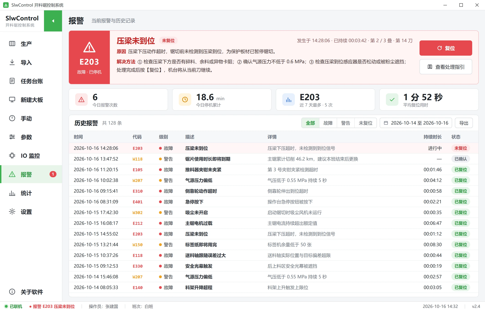

SlwControl电子开料锯控制系统
一屏掌控开料锯
方案、锯切、贴标、回报
SlwControl 运行在开料锯旁的工控机上。操作员导入方案、预览确认、启动锯切，零件下线即打印标签；管理者在办公室也能实时看到产量与进度。

-14%
切割步数减少
424 个真实作业重排刀序，无一变差
27+
套机型配置
单推手、双推手、纵横锯、开槽
10
种界面语言
文本文件即可扩展新语言
24/7
连续生产设计
联机与脱机双模式
01 · PRODUCTION
操作员需要的都在，不需要的都不在
生产页集中呈现当前大板排版、作业队列、各轴实时位置与正在执行的这一刀。大尺寸触控按钮与清晰的信息层级，让操作员戴着手套也能快速、准确地操作。
- 作业队列：设为当前、置顶、标记完成、断点续切
- 在机台端重新生成更优刀序，减少切割步数
- 内置叠切、修边、余料处理逻辑
排版与作业队列
02 · SIMULATION
刀片未动，过程先演一遍
机台级加工仿真动态演示推手、压梁、锯车与零件的每一步动作，既可用于新员工培训，也能在加工特殊方案前先行确认。
- 本刀长度、叠切层数与完成进度实时显示
- 演示模式醒目标识，绝不与真实加工混淆
加工仿真
03 · LABELS
零件下线即贴标，一件一码可追溯
标签按切割顺序打印，或由与锯切节拍同步的自动贴标工位完成。点击排版图中任意零件，即可查看详情并补打标签。
- 条码、二维码标签设计器
- 支持龙门自动贴标工位

04 · STATISTICS
早会上用得上的产量数据
每日开料张数、零件数、运行时长与作业历史自动记录，可导出 Excel；完成的零件可实时回报至车间 MES 系统。

05 · SERVICE
报警不只告诉你出了什么问题，还告诉你怎么解决
当前报警与历史报警均附带原因与处理方法。手动点动、IO 监控、分级加密的参数管理，让调试与维护更省心。

功能一览
完整的机台端软件包
方案导入
主流优化与拆单格式，以及 SkNest 方案。
加工仿真
推手、压梁、锯车、零件全过程动画。
标签与自动贴标
按切割顺序打印，任意零件补打。
新建大板与分条
手工建板、分段切条、横向开槽。
手动调试
大图标手动页，调机测试更直观。
IO 监控
输入输出实时状态，快速定位故障。
报警与处理方法
当前与历史报警，逐条附处理方法。
统计与 MES 回报
每日产量、任务台账、实时回报。
10 种语言 · OEM
品牌、配色与机型均可定制。
规格参数
技术规格
| 适用机型 | 单推手 / 双推手电子开料锯、纵横锯流水线、带开槽机型、机械臂上下料单元 |
|---|---|
| 控制系统 | 兼容多个主流品牌工业控制器，按机型适配 |
| 运行环境 | Windows 10 / 11 工控机，推荐触摸屏 |
| 数据输入 | 主流优化与拆单软件格式；SkNest 方案 |
| 数据输出 | 零件标签、生产统计（Excel）、MES 进度回报 |
| 界面语言 | 中文、English、Español、Русский、Tiếng Việt、Français、Türkçe、Ελληνικά、Polski、한국어 |
| OEM 定制 | 品牌标识、界面配色、机型配置与授权方式按设备厂商定制 |
搭配使用